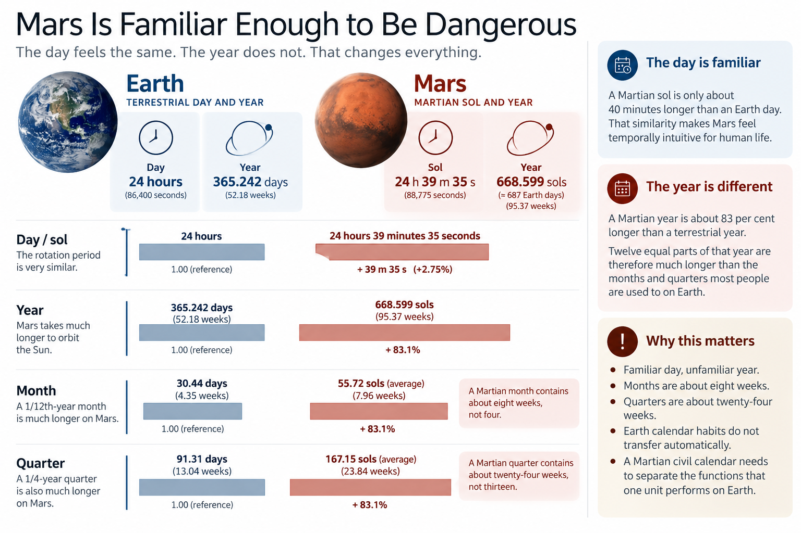

2) Almost Earth
Mars Is Familiar Enough to Be Dangerous
If Mars had a fifteen-hour day and a year lasting nine Earth years, nobody would be tempted to take the terrestrial calendar with them, change a few labels and call the job finished. The difference would be too obvious.
Mars is more troublesome than that.
A Martian mean solar day — a sol — lasts about 24 hours, 39 minutes and 35 seconds in terrestrial time, only around 2.75 per cent longer than an Earth day. The Martian year, by contrast, lasts about 668.6 sols, almost twice the length of an Earth year. That combination creates the central trap of Martian civil time: the day encourages us to think Mars will operate rather like Earth, while the year quietly makes sure that it will not.
The day survives. The year does not.
Of all the major astronomical cycles humanity might encounter on another world, the Martian sol is unusually accommodating. Sunrise still leads to daytime and sunset to night. A person living by local solar time would experience a natural daily cycle recognisably close to the one humans already know, albeit around forty minutes longer.
Whatever future Martians eventually decide to call the smaller subdivisions of that sol, the large-scale rhythm of waking, working, eating and sleeping does not require wholesale conceptual reinvention. “Tomorrow” remains intuitively useful. So do morning, afternoon and evening. A seven-sol interval, if a society chooses to use one, remains close enough to a terrestrial week that its social scale would be immediately recognisable to people arriving from Earth.
Nothing about this dictates the design of a Martian calendar. It simply makes the first layer of translation unusually easy, which is precisely where the trouble starts. Once one familiar unit transfers well, it is tempting to assume the units above it will transfer equally well. A day becomes a sol. Seven days become seven sols. Twelve months become twelve Martian months. A year remains a year. The nouns survive, the hierarchy looks reassuringly familiar, and everyone can return to the more pressing problem of not freezing to death.
Unfortunately, the arithmetic has moved.
The Martian year contains roughly 95½ seven-sol weeks. Earth's contains a little over 52. Mars has therefore left the bottom of the civil-time ladder almost untouched while nearly doubling the distance to the top.

Detailed figure description
An Earth–Mars comparison panel puts the terrestrial day and year alongside the Martian sol and year. Below, horizontal bars compare approximate annual fractions such as months and quarters. Right-side callouts explain that Mars retains a near-Earth-length day but has a much longer year, so familiar labels describe different civil durations. The numerical labels are approximate comparisons rather than the calendar specification.
Editorial note: this is a descriptive summary, not an independently verified transcription of every diagram label. Refer to the surrounding text and the Marian technical specification for authoritative numeric details where applicable.
On Earth, the relationship between day and year is extraordinarily convenient for civil life. Twelve months produce an average interval of just over 30 days, or about four and a third weeks. Divide the year into four and a quarter lasts a little over thirteen weeks. These relationships are so familiar that we barely recognise them as relationships at all. A month feels like a month. A quarter feels like a quarter. A year feels like a year.
Mars breaks that equivalence because the daily cycle stays almost the same while the annual cycle nearly doubles. Divide approximately 668.6 sols into twelve and each part is about 55.7 sols, or almost eight seven-sol weeks. Divide the same year into four and each quarter is about 167 sols, close to twenty-four weeks. The words still work mathematically: one twelfth of a year can still be called a month, and one fourth can still be called a quarter. What changes is what those words mean in use.
| Civil relationship | Earth | Mars |
|---|---|---|
| Natural solar day | 1 day | 1 sol ≈ 1.027 Earth days |
| Approximate annual cycle | 365 days | 668.6 sols |
| 1/12 of year | 30.4 days | 55.7 sols |
| 1/4 of year | 91.3 days | 167.2 sols |
| Seven-day/sol weeks per year | ≈52.2 | ≈95.5 |
The important numbers are not really the absolute ones. They are the ratios. A terrestrial quarter is a useful medium-range horizon; a Martian quarter defined strictly as one fourth of the local year lasts almost six terrestrial months. A terrestrial month sits comfortably between week and quarter; a twelve-part Martian month contains almost eight weeks.
The physical year has stretched. Human daily life has not stretched with it.
That is the fundamental tension.
Familiar words become false friends
Calendar language conceals a surprising amount of design. When we say “month”, we rarely ask which property of an Earth month we mean. Is it one twelfth of the annual cycle? Roughly four weeks? A recurring unit for salaries and rent? A marker of seasonal position? One of twelve named boxes across the top of a wall planner?
On Earth, we can avoid the question because one unit performs all of those jobs tolerably well. Mars forces us to answer it.
If a Martian month remains roughly one twelfth of the local year, it becomes about 56 sols long. It preserves its annual meaning but loses its familiar operating duration. If instead we preserve something close to a four-week month, the Martian year needs roughly twenty-four of them. The familiar duration survives, but the familiar twelve-part annual structure does not.
Neither choice is a mathematical mistake. They preserve different things.
The same problem appears with a quarter. On Earth, the word means both one fourth of the year and, approximately, a thirteen-week planning period. Mars separates those meanings dramatically: one fourth of the year is closer to twenty-four weeks. Calling that period a quarter remains entirely correct. Expecting it to behave like an Earth business quarter is another matter.
This is the deeper danger in carrying terrestrial calendar language to another planet. The vocabulary looks as though it describes fixed units when much of it actually describes bundles of relationships that happen to coincide on Earth. Once the astronomical environment changes, the bundle opens.
An Earth-born settler could therefore understand every individual word in a Martian calendar and still misunderstand what the calendar was telling them. “Next month” might mean almost two terrestrial months away. “Annual” would describe an interval approaching two Earth years. A process described as “quarterly” would recur only a little more than twice during one terrestrial year.
There is nothing formally wrong with any of those statements.
The danger is intuition.
There is no free conversion
One response is simply to keep using the Gregorian calendar. For early missions there are excellent reasons to do exactly that. Earth-based organisations, families, governments, suppliers and mission controllers will all continue to live by terrestrial dates. Conversion is easy, and there is little value in calendrical independence while a small crew remains embedded almost entirely in terrestrial institutions.
The character of that solution changes as settlement becomes permanent. A Martian town generations into its own history could still organise its civil year around Earth's movement around the Sun; civilisations tolerate stranger conventions. But terrestrial New Year would move continuously through the Martian seasonal cycle, locally meaningful anniversaries would be expressed primarily through the orbit of another planet, and the system would provide little native structure for understanding the Martian year.
That is possible. It is simply no longer obviously the simplest answer.
A second approach is to preserve the familiar terrestrial hierarchy but stretch it across Mars's longer year. Twelve months remain twelve months. Four quarters remain four quarters. Perhaps even the familiar names survive. This looks reassuring until the units start doing work.
A monthly review is now roughly an eight-week review. Three months approach half a terrestrial year. A quarterly process sits on a rhythm of almost twenty-four weeks. A Martian year remains perfectly meaningful as a local annual cycle, but in elapsed human experience it is much longer than the year Earth-born settlers grew up with.
Again, none of this makes the system wrong. People living permanently on Mars would develop intuitions around whatever calendar they actually used. It does expose an assumption, however: preserving the fraction of the year does not automatically preserve the human function of the unit.
A third approach reverses the priority. Keep something close to a four-week month. Preserve operating intervals nearer the durations humans already use. Build upward from the sol rather than downward from the orbit. That solves one problem and creates another: the Martian year now contains roughly twenty-four month-like periods. A thirteen-week planning interval fits into the year more than seven times rather than four. If we still call such a period a quarter, the word no longer means one fourth of anything.
There is no free conversion. Mars makes us choose which relationships matter.
That prevents calendar design from becoming a competition to discover which Earth unit can be copied most faithfully. Different properties can be preserved, but not all of them at once. The question is not simply how to translate the terrestrial calendar. It is what deserves translating.
Nearly the same is not the same
The closeness of the Martian sol creates one further trap. A sol is only about 2.75 per cent longer than an Earth day. For many purposes that difference is modest, but civil systems are built from repeated units. Roughly forty minutes accumulate every sol. Over a seven-sol interval the difference is several hours. Over longer periods, terrestrial dates and local solar dates slide continuously through one another.
This is not an argument against using the sol. Quite the opposite: its similarity to an Earth day is what makes it such an obvious basis for Martian civil life. It is simply a reminder that similar is not synchronised.
The same caution applies to the year. Saying that a Martian year lasts roughly 1.88 Earth years is useful for comparison, but it does not mean every human interval on Mars should become 1.88 times longer. People will not sleep 1.88 times longer. A working week does not naturally become thirteen Earth days because Mars orbits more slowly. The dentist does not need 1.88 times as long between every check-up.
Some activities are naturally tied to the local day. Some are sensibly tied to the annual or seasonal cycle. Others are social conventions whose useful duration has little direct astronomical basis. A civil calendar has to accommodate all three.
Mars's seasons reinforce the point. Its axial tilt gives it a recognisable seasonal cycle, but its more eccentric orbit means the planet does not move around the Sun at a constant rate. Equal amounts of elapsed time therefore do not correspond to equal amounts of orbital movement. “Four seasons” does not automatically mean four equal quarters.
A calendar can favour equal elapsed periods, closer correspondence with orbital position, or some compromise between them. Different Martian calendar proposals have placed different weight on these objectives. For now, the important point is simpler: Mars repeatedly offers just enough resemblance to Earth to invite an analogy, then declines to honour the rest of it.
The day looks familiar. The seasons look familiar. The idea of a year looks familiar.
The relationships among them are different.
Preserve the function, not automatically the unit
None of this means the terrestrial calendar is badly designed. The Gregorian calendar contains plenty of irregularity, much of it inherited from astronomy, history, religion, politics and long path dependence. More importantly, it works. Not beautifully in every respect, but well enough that almost nobody begins the morning by wondering whether September requires structural reform.
Its units also have the enormous advantage of living on the planet for which they evolved. Earth's daily and annual cycles happen to sit at ratios that allow several civil functions to coexist inside the same familiar structures. Mars changes those ratios while leaving much of the vocabulary looking usable.
The mistake would therefore not be taking familiar ideas to Mars. Familiarity has genuine value. People arriving from Earth will bring languages, institutions, habits and expectations with them, and replacing every recognisable convention merely because a new planet permits it would impose cost for very little gain.
The mistake would be assuming that because a familiar unit worked under terrestrial conditions, it must preserve the same functions under Martian ones.
A calendar is not transferable simply because its labels are.
The more useful starting point is to separate the functions hidden inside those inherited ideas. Which units describe astronomy? Which support recurring human activity? Which help us locate ourselves within the year? Which are mainly cultural? Which relationships are valuable enough to preserve, and which only feel inevitable because we have never lived anywhere else?
That is the hinge on which much of Martian calendar design turns. On Earth, a month can be both roughly one twelfth of a year and roughly four weeks long. A quarter can be both one fourth of the year and roughly thirteen weeks. Mars keeps the day almost unchanged while nearly doubling the annual cycle, so those meanings no longer coincide.
If Mars were completely alien in temporal terms, we would expect to invent something completely new. If it were almost identical to Earth, we could simply carry the terrestrial calendar across.
Instead, Mars occupies the awkward middle: familiar enough to make inherited ideas useful, and different enough to make them unreliable.